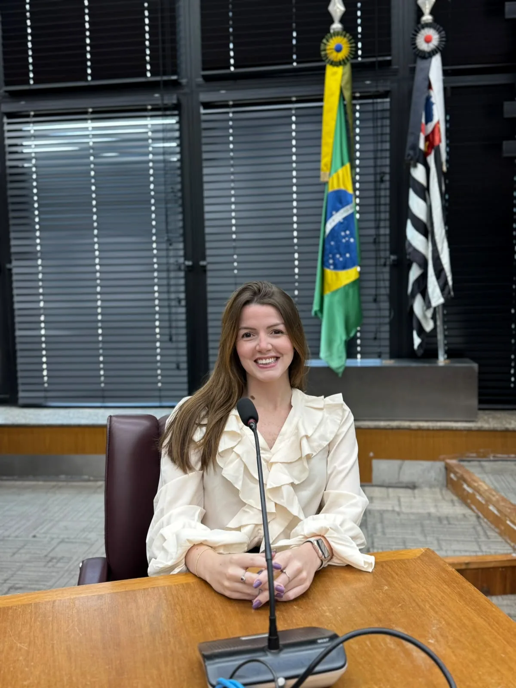
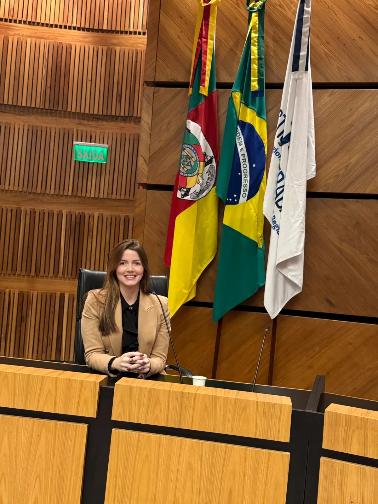
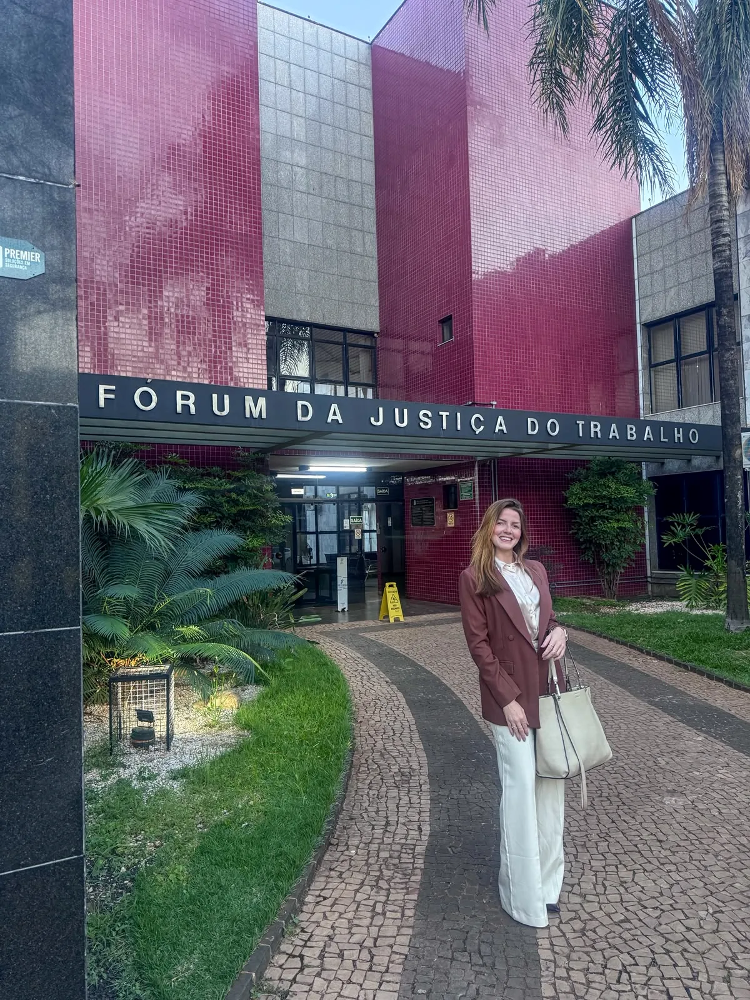
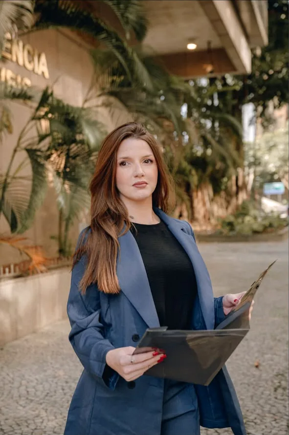
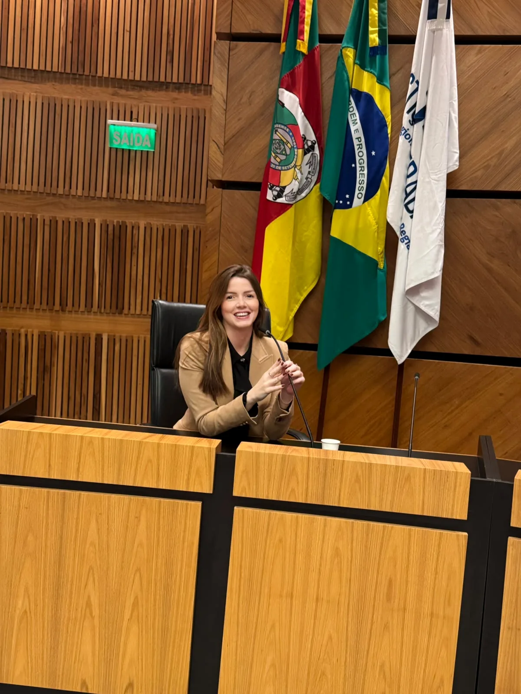
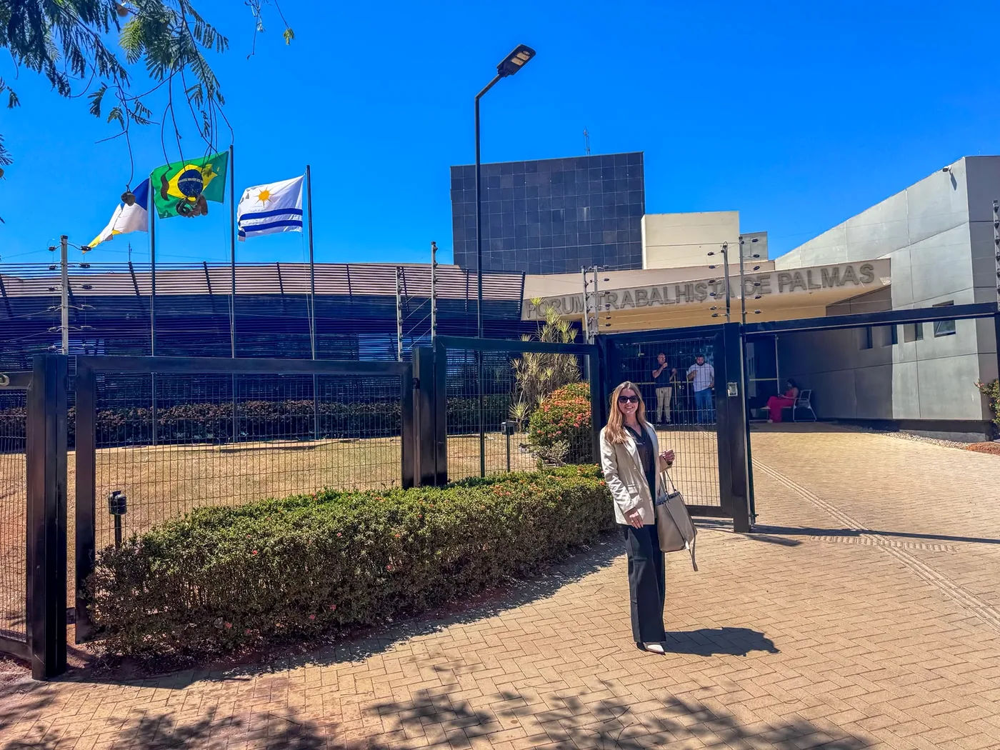
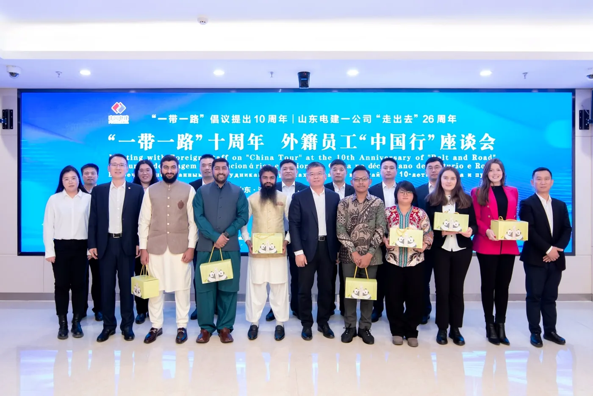
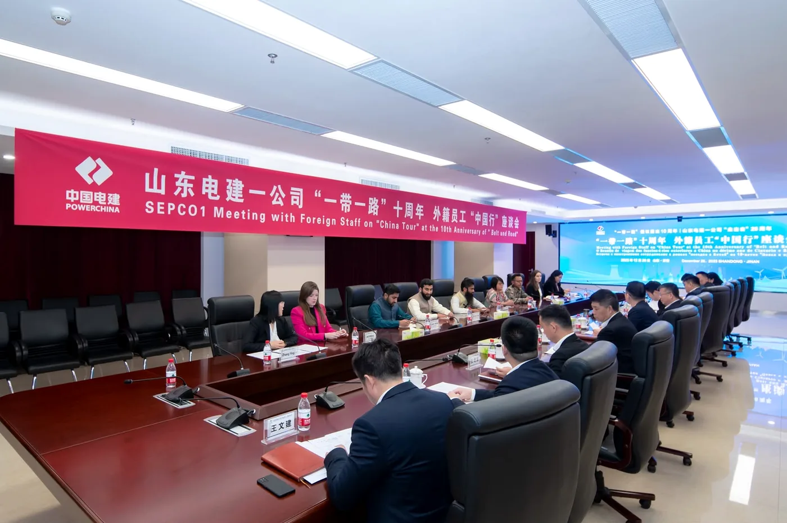

CLT, art. 224
Bancários e gerentes
A jornada do bancário é de 6 horas. Quem cumpre 8 horas sem exercer de fato um cargo de confiança pode ter direito às horas excedentes. O mesmo vale para o gerente que só tem o título.
→Priscilla Diogo acompanha pessoalmente o processo de quem trabalha: da reclamatória à execução, com despachos e sustentações orais nos tribunais.

Uma sentença favorável é só metade do caminho. O direito existe de verdade quando chega a quem trabalhou.
Priscilla Diogo · Advogada
Você passa por isso?
Escolha uma ou mais situações. A mensagem para o WhatsApp é montada com o que você marcou, e você revisa antes de enviar.
Áreas de atuação
Seis frentes em que a atuação é mais frequente. Se a sua situação não está aqui, vale perguntar.
A jornada do bancário é de 6 horas. Quem cumpre 8 horas sem exercer de fato um cargo de confiança pode ter direito às horas excedentes. O mesmo vale para o gerente que só tem o título.
→O trabalho além da jornada deve ser pago com adicional de no mínimo 50%. Intervalo cortado, ponto com horários sempre iguais e banco de horas irregular também entram na conta.
→Lesões e doenças causadas ou agravadas pelo trabalho podem gerar indenização e garantia de emprego de 12 meses após o retorno do afastamento pelo INSS.
→Quando a empresa deixa de depositar o FGTS ou de pagar a insalubridade, o trabalhador pode encerrar o contrato por culpa dela, a rescisão indireta, e receber como numa dispensa sem justa causa.
→Enfermeiros, técnicos e demais profissionais de saúde expostos a agentes biológicos têm direito ao adicional de insalubridade. Sem o pagamento, cabe cobrança e, conforme o caso, rescisão indireta.
→Tempo de espera para carga e descarga e tempo à disposição em viagem fazem parte da jornada. Jornadas longas sem o pagamento correto das horas extras podem ser cobradas.
→Também atendo · Previdenciário
Como funciona
Muita gente ganha a ação e demora a receber porque ninguém acompanhou a execução. Aqui, o caso só termina quando o valor chega a você.
Você conta o que aconteceu e envia os documentos que tiver: carteira de trabalho, contracheques, extrato do FGTS, mensagens. Eu explico, sem juridiquês, o que pode ser pedido.
WhatsApp ou presencialPreparo a ação com as provas organizadas e acompanho a audiência ao seu lado.
Vara do TrabalhoTestemunhas, perícias e documentos. Despacho com o juiz quando o caso pede atenção direta.
Despachos presenciaisSe a decisão for questionada, sigo para o Tribunal Regional e, quando cabe, para o TST, com sustentação oral na sessão de julgamento.
TRT e TSTCálculos, penhora e cobrança até o pagamento. É a fase em que muitos processos param, e onde eu insisto.
Até o valor chegarSobre mim
Escolhi um lado da mesa: o de quem trabalha.
Sou Priscilla Diogo, advogada especializada em Direito e Processo do Trabalho. Há mais de dez anos atuo na advocacia trabalhista ao lado de quem trabalha, em causas que vão da hora extra não paga ao acidente que mudou uma vida.
Aprendi cedo que uma sentença favorável não basta. O direito só existe de verdade quando o valor chega a quem trabalhou. Por isso acompanho cada caso do início ao fim, despacho pessoalmente com magistrados e faço questão de estar na tribuna quando o processo sobe para os tribunais.
Meu escritório sou eu. Quem me procura fala comigo, e não com uma equipe que muda a cada etapa.
Nos tribunais
Já fiz sustentação oral em mais de 15 tribunais do país. Estar presente no julgamento é a chance de falar diretamente com quem decide.








Palestras · Internacional
Em 2026, fui convidada para uma palestra e uma reunião na China sobre direitos trabalhistas e sua aplicação no Brasil, ao lado de profissionais de vários países.
Levar o tema para fora do país reforça o que defendo aqui: as regras de proteção ao trabalhador valem e precisam ser cumpridas.
Palestra e reunião em encontro internacional.
O tempo de espera, a ADI 5322 e o que muda no bolso do motorista.
Fala em evento na sede da OAB/RJ.
Conteúdo e curiosidades
O que é a rescisão indireta e quando ela se aplica.
Ver no Instagram → BancáriosA diferença entre cargo de confiança e um título no crachá.
Ver no TikTok → CaminhoneirosTempo de espera, jornada e horas extras do motorista.
Ver no Instagram →Perguntas frequentes
Em regra, até 2 anos depois do fim do contrato, cobrando os últimos 5 anos trabalhados. Quanto antes você buscar orientação, menos direitos ficam para trás.
Sim, em algumas situações. Quando há falta grave da empresa, como FGTS atrasado, é possível pedir a rescisão indireta. Cada caso precisa ser analisado com os documentos.
Carteira de trabalho, contracheques, extrato do FGTS, termo de rescisão (se houver), controles de ponto e mensagens ou e-mails que mostrem a rotina de trabalho. Se não tiver tudo, comece pelo que tiver.
O primeiro contato é pelo WhatsApp. O atendimento presencial é no Centro do Rio ou na Freguesia, de segunda a sexta, das 9h às 18h.
Não. Atuo exclusivamente na defesa de trabalhadores.
Contato
Conte o que aconteceu. A primeira conversa é comigo.
Freguesia, Rio de Janeiro (RJ)
Abrir no mapa →